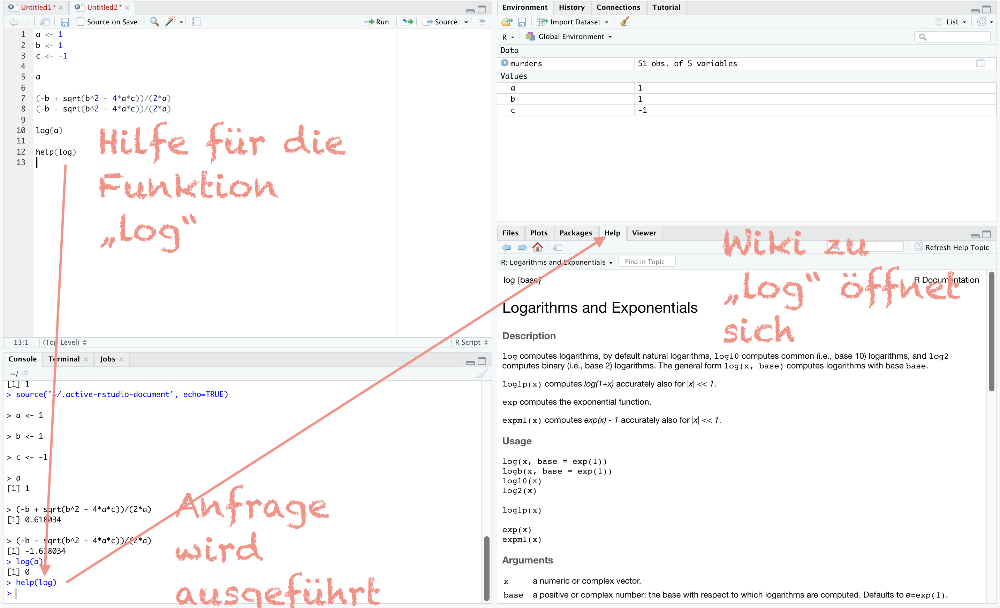
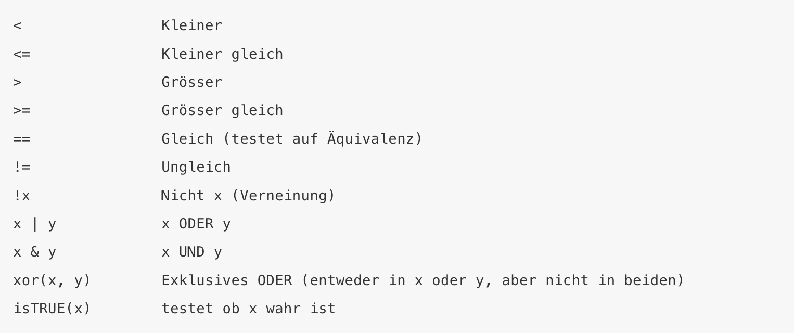
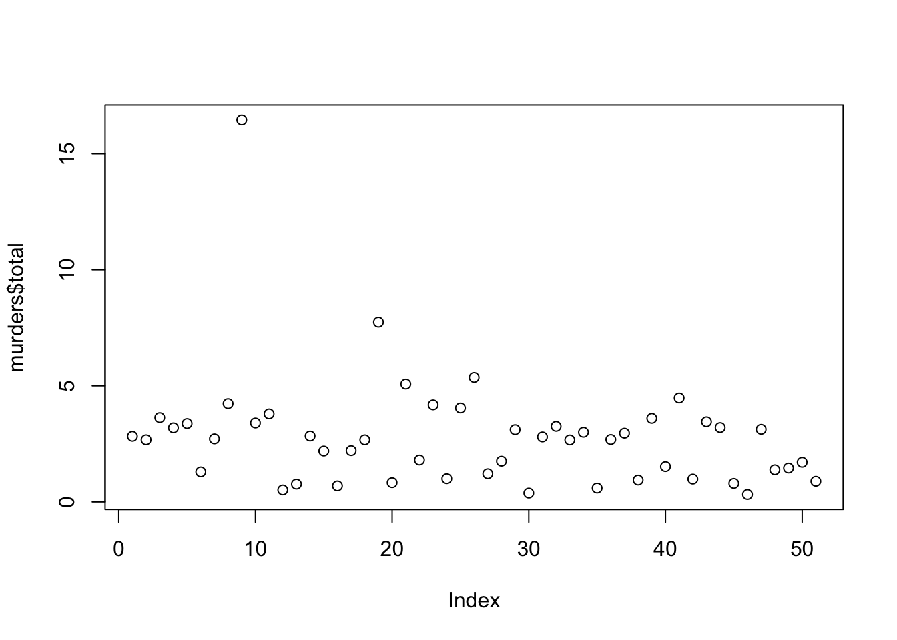
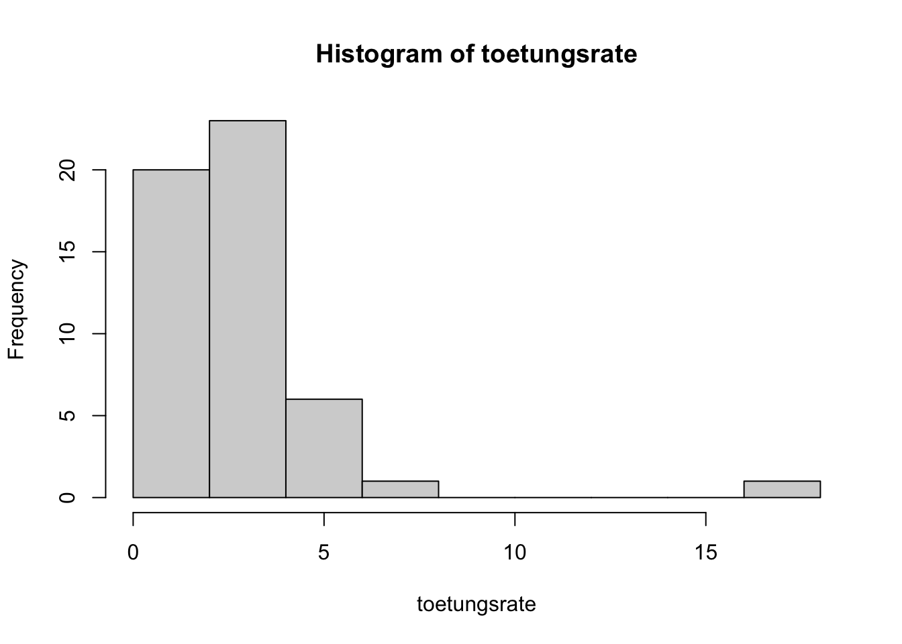
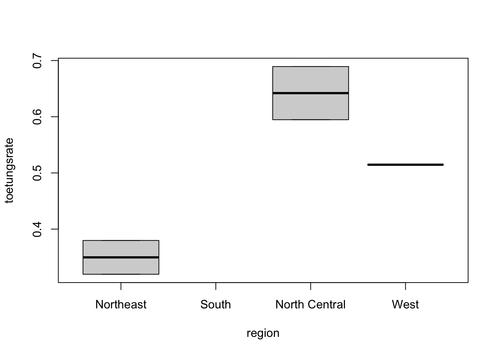
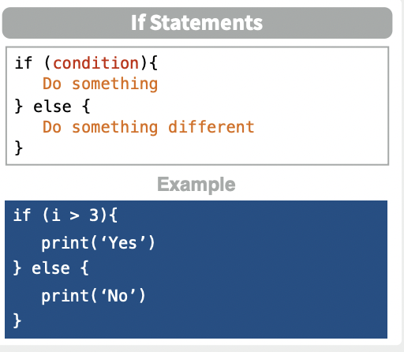
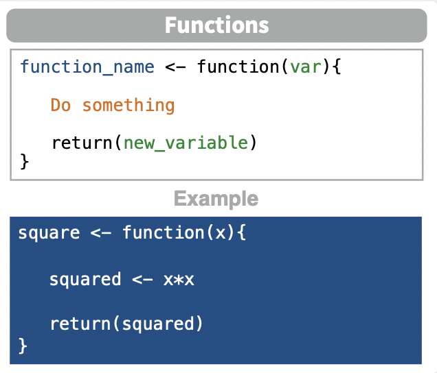
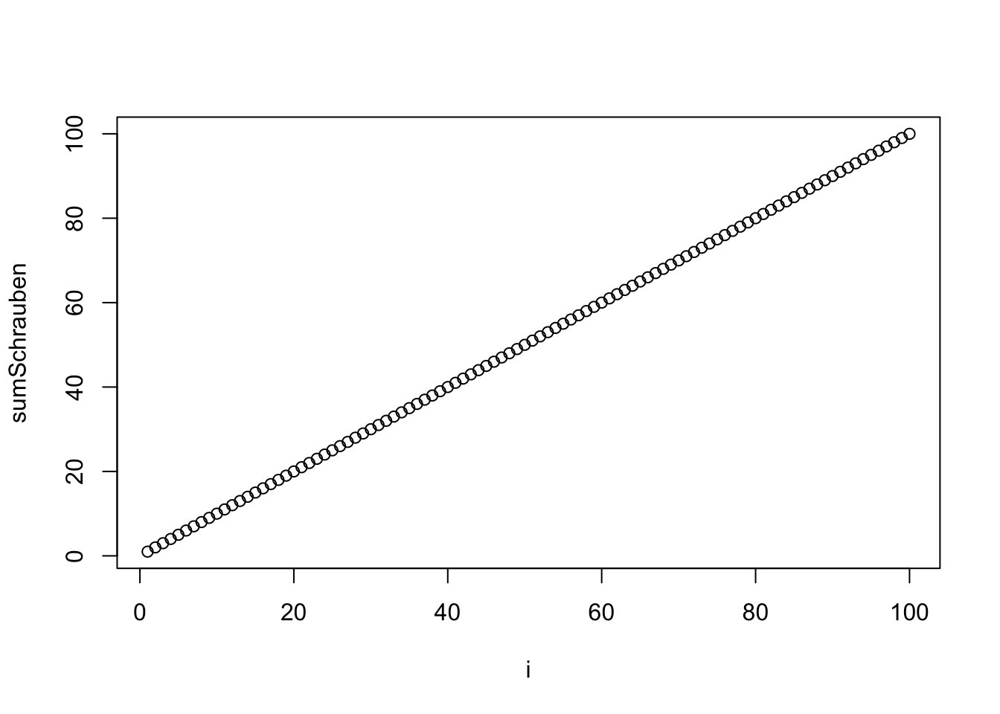

R Grundlagen
Angstfreie Einführung - erste Schritte
Was kostet R?
Open-source Software.
Kostenlos.
Wo herunterladen?
1. Schritt: R herunterladen: https://www.r-project.org/
https://www.r-project.org/
2. Schritt: R Studio Desktop herunterladen:  https://www.rstudio.com/products/rstudio/download/
https://www.rstudio.com/products/rstudio/download/
Was ist R?
R ist eine Programmiersprache, die von Statistikern entwickelt wurde.
R ist wohl nicht vergleichbar mit anderen Software Engineering Softwares.
Attraktiv an R ist:
- Skripte werden geschrieben - wiederholbar (reproducable work zu jedem Zeitpunkt)
Skripte können in jedem Texteditor gespeichert, bearbeitet und geteilt werden
Das kann ich in Statistica, SPSS oder Tableau nicht
Ich kann diese Skripte mit jedem und jeder weltweit einfach teilen. Ein großer großer Pluspunkt im Vergleich zu Point & Click Software Dateien, die dann eben nicht jeder verwenden kann - sondern nur derjenige mit der entsprechenden Lizenz.
- Open Source
- Kostenlos
- Muliplattform (Linux, MacOs, Windows)
- große, weltweite, aktive Gemeinschaft von R Nutzern auf Stackoverflow - viele Ressourcen, um zu Suchen und Fragen zu stellen
- Add-Ons für neue Data Science Anwendungen von einer Community
Aufbau von 
Man arbeitet nach der Installation von R und R Studio nur noch mit R Studio. D.h. nur dieses eine Programm starte ich.
R Studio ist eine sogenannte IDE (Integrated Development Environment).
D.h. hier kann ich schreiben, welche Auswertungen gefahren werden sollen (Editor), kann diese Auswertungen durchführen (Console), sehe welche Daten, Variablen, Verbindungen, usw. ich eingerichtet habe und sehe zu guter letzt auch meine Ergebnisse.

Ausführen von Skripten
Die bisher beschriebenen Zeilen Code wurden im Skriptfeld von R Studio eingetragen.
Dieses kann ich abspeichern, in anderen, “normalen” Texteditoren weiterbearbeiten und versenden, usw. Editoren arbeiten meist so, dass sie den Code besser lesbar machen. Sie geben einem automatische Vorschläge an, setzen Klammern automatisch und heben Formelteile farbig unterschiedlich hervor.
R Studio ist einer dieser Editoren.
Ein Vorteil von R Studio gegenüber anderen Editoren ist der, dass ich sehr einfach meinen Code testen kann, während ich ihn schreibe.
Ein neues Skript öffne ich über das + oben links im Editor. Dies kann benannt werden, indem ich auf Speichern klicke und ihm einen Namen gebe.
Beispielhafte Eingabe erster Zeilen Code im R Skript:
a) Laden der Libraries, die ich nutzen möchte.
b) Datenimport
c) Grafik zur explorativen Datenanalyse
library(tidyverse) # Laden des packages “tidyverse”
library(dslabs) # Laden des packages “dslabs”
data("murders") # Laden des Datensatzes “murders”
murders %\>% ggplot(aes(x=population, y=total, label=abb, color=region)) + geom_label() # Erstellen einer ersten Grafik`
Wie sehe ich nun, zu welchem Ergebnis dieser Code im Editor führt?
Drücken im Skript selber von folgender Tastenkombi:
Command + Shift + Return
oder
Ctrl + Shift + Enter
oder:
“Run” Button in R Studio

Die Code-Ergebnisse erscheinen nun in der Console unten links.
Der Graph erscheint in der View Pane rechts. Hier kann die Grafik gezoomt werden, exportiert werden, etc.
Welche Daten ich geladen habe, sehe ich oben rechts.

Wenn ich nur eine Zeile Code im Editor laufen lassen möchte, dann lediglich die folgenden Tastenkombis drücken:
Command + Return
oder
Ctrl + Enter
Grundlegendes in R
- R ist case-sensitive, d.h. unterscheidet zwischen Groß- und Kleinschreibung.
- Variablen benenne ich daher nur in Kleinbuchstaben
- Variablen benenne ich daher nur in Kleinbuchstaben
- R verwendet den Punkt . als Dezimaltrennzeichen
- Fehlende Werte werden durch NA gekennzeichnet
- Auskommentiert wird durch # Hashtag
- Variablennamen sollten mit einem Buchstaben beginnen. Leerzeichen vermieden werden
- Inhalt der Variable anzeigen: Variable schreiben und Code ausführen
- Nur Daten oder Objekte in der Default Ansicht oben rechts, also Environment oder Daten, kann R verwenden.
Objekte
Objekte sind Datenstrukturen, also die Art und Weise wie Daten dargestellt werden. Zwei Arten sind von besonderer Bedeutung: Vektoren und Dataframes. Vektoren sind die technische Grundstruktur einer Variablen in R, Dataframes sind die R Struktur der Excel Tabelle. Eine neue Variante von Dataframes nennt sich tibble.
Vor dem Start in R, müssen wir einige Grundkonzepte kennenlernen.
Hier eignen sich bereits die mathematischen Gleichungen als Einstiegsszenario.
Ich möchte folgende Gleichung lösen.
\(a x^{2}+b x+c=0\)
Ich kann nach x lösen und erhalte:
\(\frac{-b \pm \sqrt{b^{2}-4 a c}}{2 a}\)
In einer Programmiersprache kann ich Variablen allgemein halten und somit bleibt auch die Gleichung allgemein.
So, ich fange an:
Ich möchte die Gleichung lösen für:
a = 1
b = 1
c = -1
Im R Studio Editor gebe ich folgendes ein:
a <- 1b <- 1c <- -1Achtung: In R nutzt man diese Sympbole statt dem Gleichheitszeichen. Es ist ein “kleiner als” und ein “Minus” Zeichen. Dies ist der Standard der gelehrt wird. Offenbar geht in den meisten Gleichungen auch das = Zeichen.
Diesen Code lasse ich nun in der Console laufen.
Nichts passiert. Also nichts wird in der Console als Ergebnis angezeigt. Das ist gut! Hätte ich einen Fehler gemacht, so hätte ich hier eine Fehlermeldung erhalten.
Nun möchte ich aber sehen, wie die Console mir etwas ausgibt. Also hier das erste Beispiel.
Schreiben von
aUnd ausführen des Codes führt zur Ausgabe von
{r} a
Diese Vorgehensweise entspricht derer, die ich weiterhin verwenden werde.
Eine explizitere Vorgehensweise wäre folgende, zur Ausgabe des Wertes der in Variable a gespeichert wurde:
print(a)## [1] 1Auch hier wird ausgegeben, dass a=1 ist.
In diesem Beispiel ist a eine Variable. In R kann diese Variable ein Objekt sein. Später werde ich komplexere Objekte als Inhalte zeigen. Grundsätzlich ist der Code aber immer gleich: Ich tippe das Objekt in R ein, und erhalte als Ergebnis das, was im Objekt gespeichert ist.
Wenn ich alle Objekte sehen möchte, die in meinem Workspace gespeichert sind, gebe ich folgendes ein:
ls()## [1] "a" "b" "c"Im grafischen Interface von R, R Studio, befindet sich diese Anzeige auch stets sichtbar hier:

Um nun endlich die Lösung für die obige Gleichung zu berechnen, gebe ich diese in das Skript ein und lasse den Code ausführen. Das Ergebnis findet sich dann in der Console.
(-b + sqrt(b^2 - 4*a*c))/(2*a)
und für die zweite:
(-b - sqrt(b^2 - 4*a*c))/(2*a)
Das Ergebnis ist 0,62 bzw. 1,62.

Funktionen
Ich habe einige vorprogrammierte Funktionen. ls()und sqrt(x) habe ich bereits verwendet. Meist muss in den Klammern nach der Funktionsangabe allerdings ein Eintrag zwischen den Klammern stehen. Zum Beispiel der Logarithmus von a, welches 1 war, ist 0.
log(a)## [1] 0
Funktionen können auch “nested” sein, d.h. verschachtelt. Ein Beispiel:
log(exp(1))## [1] 1
Hier wird von innen nach außen berechnet. Also erst exp(1) und dann dieses Ergebnis log().
Es gibt viele pre-build Funktionen, so wie:
- Pi:
pi## [1] 3.141593- Unendlichkeit:
Inf## [1] Inf
Hilfe
Die Hilfe gibt nützliche Informationen dazu, was zum Beispiel Funktionen für Argumente benötigen.
Beispiel
help(log)

Die meisten Hilfethemen kann ich auch wie folgt abfragen:
?log
Und wenn ich wissen möchte, welche Argumente die Funktion benötigt, dann erfrage ich dies durch folgende Zeile:
args(log)## function (x, base = exp(1))
## NULL
Diese kann ich nun wie folgt anwenden für mein Bedürfnis:
log(100, 10)
oder ich kann auch schreiben:
log(x=100, base=10)
Wenn ich Operatoren abfrage, dann muss ich Anführungszeichen verwenden:
?"+"
Installieren von Statistikmodulen, wenn weitere benötigt werden
Frisch installiert bietet R nur einen kleinen Teil der Funktionen, die man insgesamt nutzen kann.
Die erste Lieferung nennt man: base R
Die extra Funktionalität kommt von externen Entwicklern. Es gibt hunderte dieser add-ons.
Da nicht jeder, jede Funktionalität benötigt, werden diese in Packages angeboten. Diese Packages sind sehr leicht innerhalb von R selber zu installieren.
Installation über Code:
Ich kann packages über Codeeingabe im Skript, oder über das R Studio im Menü laden.
So installiere ich ein Package namens dslabs per Code:

Diesen Code gebe ich im Skript ein:
install.packages('dslabs')
R installiert dann dieses package. Vorraussetzung ist eine Verbindung mit dem Internet.
Wenn ich einmal ein package installiert habe, muss es nicht wieder installiert werden.
Ich muss es dann nur in meine Auswertung mit dem library() Befehl laden.
zwei Packages oder mehr zu installieren:
install.packages("dslabs", "tidyverse")
Installation über das Menü von
Die Statistik packages können auch über das Menü, und damit ohne Code installiert werden.
Tools – Install packages

Erinnerung: Ich brauche die Packages nie wieder zu installieren. Trotzdem ist es hilfreich die Installation im Skript zu haben, falls man R neu installieren muss.
Packages werden nicht in R Studio installiert, sondern in R selber.
So kontrolliere ich, welche Statistik packages ich bereits installiert habe:
installed.packages()
Nach dem Installieren von Statistik Software muss das Packet in die laufende Auswertung geladen werden
Nun muss ich die package-Installation noch in meine laufende Auswertung (Session) laden. Hierzu gebe ich folgendes ein:
library(dslabs)
Datensätze
Ich lade das package “datasets”.
install.packages("datasets")
Und schaue welche Datensätze dieses Packet mir geliefert hat:
data()
Um mir eins anzuschauen, gebe ich den Namen ein. Es wird nun angezeigt.
CO2## Plant Type Treatment conc uptake
## 1 Qn1 Quebec nonchilled 95 16.0
## 2 Qn1 Quebec nonchilled 175 30.4
## 3 Qn1 Quebec nonchilled 250 34.8
## 4 Qn1 Quebec nonchilled 350 37.2
## 5 Qn1 Quebec nonchilled 500 35.3
## 6 Qn1 Quebec nonchilled 675 39.2
## 7 Qn1 Quebec nonchilled 1000 39.7
## 8 Qn2 Quebec nonchilled 95 13.6
## 9 Qn2 Quebec nonchilled 175 27.3
## 10 Qn2 Quebec nonchilled 250 37.1
## 11 Qn2 Quebec nonchilled 350 41.8
## 12 Qn2 Quebec nonchilled 500 40.6
## 13 Qn2 Quebec nonchilled 675 41.4
## 14 Qn2 Quebec nonchilled 1000 44.3
## 15 Qn3 Quebec nonchilled 95 16.2
## 16 Qn3 Quebec nonchilled 175 32.4
## 17 Qn3 Quebec nonchilled 250 40.3
## 18 Qn3 Quebec nonchilled 350 42.1
## 19 Qn3 Quebec nonchilled 500 42.9
## 20 Qn3 Quebec nonchilled 675 43.9
## 21 Qn3 Quebec nonchilled 1000 45.5
## 22 Qc1 Quebec chilled 95 14.2
## 23 Qc1 Quebec chilled 175 24.1
## 24 Qc1 Quebec chilled 250 30.3
## 25 Qc1 Quebec chilled 350 34.6
## 26 Qc1 Quebec chilled 500 32.5
## 27 Qc1 Quebec chilled 675 35.4
## 28 Qc1 Quebec chilled 1000 38.7
## 29 Qc2 Quebec chilled 95 9.3
## 30 Qc2 Quebec chilled 175 27.3
## 31 Qc2 Quebec chilled 250 35.0
## 32 Qc2 Quebec chilled 350 38.8
## 33 Qc2 Quebec chilled 500 38.6
## 34 Qc2 Quebec chilled 675 37.5
## 35 Qc2 Quebec chilled 1000 42.4
## 36 Qc3 Quebec chilled 95 15.1
## 37 Qc3 Quebec chilled 175 21.0
## 38 Qc3 Quebec chilled 250 38.1
## 39 Qc3 Quebec chilled 350 34.0
## 40 Qc3 Quebec chilled 500 38.9
## 41 Qc3 Quebec chilled 675 39.6
## 42 Qc3 Quebec chilled 1000 41.4
## 43 Mn1 Mississippi nonchilled 95 10.6
## 44 Mn1 Mississippi nonchilled 175 19.2
## 45 Mn1 Mississippi nonchilled 250 26.2
## 46 Mn1 Mississippi nonchilled 350 30.0
## 47 Mn1 Mississippi nonchilled 500 30.9
## 48 Mn1 Mississippi nonchilled 675 32.4
## 49 Mn1 Mississippi nonchilled 1000 35.5
## 50 Mn2 Mississippi nonchilled 95 12.0
## 51 Mn2 Mississippi nonchilled 175 22.0
## 52 Mn2 Mississippi nonchilled 250 30.6
## 53 Mn2 Mississippi nonchilled 350 31.8
## 54 Mn2 Mississippi nonchilled 500 32.4
## 55 Mn2 Mississippi nonchilled 675 31.1
## 56 Mn2 Mississippi nonchilled 1000 31.5
## 57 Mn3 Mississippi nonchilled 95 11.3
## 58 Mn3 Mississippi nonchilled 175 19.4
## 59 Mn3 Mississippi nonchilled 250 25.8
## 60 Mn3 Mississippi nonchilled 350 27.9
## 61 Mn3 Mississippi nonchilled 500 28.5
## 62 Mn3 Mississippi nonchilled 675 28.1
## 63 Mn3 Mississippi nonchilled 1000 27.8
## 64 Mc1 Mississippi chilled 95 10.5
## 65 Mc1 Mississippi chilled 175 14.9
## 66 Mc1 Mississippi chilled 250 18.1
## 67 Mc1 Mississippi chilled 350 18.9
## 68 Mc1 Mississippi chilled 500 19.5
## 69 Mc1 Mississippi chilled 675 22.2
## 70 Mc1 Mississippi chilled 1000 21.9
## 71 Mc2 Mississippi chilled 95 7.7
## 72 Mc2 Mississippi chilled 175 11.4
## 73 Mc2 Mississippi chilled 250 12.3
## 74 Mc2 Mississippi chilled 350 13.0
## 75 Mc2 Mississippi chilled 500 12.5
## 76 Mc2 Mississippi chilled 675 13.7
## 77 Mc2 Mississippi chilled 1000 14.4
## 78 Mc3 Mississippi chilled 95 10.6
## 79 Mc3 Mississippi chilled 175 18.0
## 80 Mc3 Mississippi chilled 250 17.9
## 81 Mc3 Mississippi chilled 350 17.9
## 82 Mc3 Mississippi chilled 500 17.9
## 83 Mc3 Mississippi chilled 675 18.9
## 84 Mc3 Mississippi chilled 1000 19.9Motivation für die Einführung
Die nachfolgenden ersten Übungen beziehen sich auf die Erschießungs-Tötungsraten der USA - ich möchte bestimmen wohin ich ziehen könnte wegen dem Job, und wohin ich lieber nicht umziehen würde.
Grundsätzlich gilt für die Arbeit mit Daten:
- Wenn ich Daten sehe, bin ich eher erst einmal kritisch abwartend. Schau welche Daten gezeigt werden und vor allem welche nicht gezeigt werden. - kritisch und neugierig sein - große Notwendigkeit der Interaktivität und von schnellen flexibeln Analysen im Feld Data Science
Datentypen
Bestimmung der Klasse der Daten:
class(a)## [1] "numeric"
Variable a ist also numerisch.
oder:
class(ls)## [1] "function"ls() ist also eine Funktion
Bislang haben wir nur einen Wert in einer Variablen gespeichert. Aber in der praktischen Arbeit kommen solche Beispiele selten vor. Nun zeige ich die Datentypen, mit denen tatsächlich gearbeitet wird:
Data Frame
Diese kann ich mir wie eine normale Excel Tabelle vorstellen. Die Spalten stehen für Variablen und die Zeilen für Beobachtungen.
In einem Data Frame kann ich verschiedene Datentypen in einem Datensatz vereinen. Das entspricht dem realen Vorliegen der meisten Daten. Folgender Datensatz entspricht einem Data Frame. Dieser ist im Beispielpackage bereits enthalten:
install.packages("dslabs")
Laden des packages:
library(dslabs)Laden der Daten:
data("murders")Abfrage des Datentyps:
class(murders)## [1] "data.frame"Ich sehe, es ist tatsächlich ein Data Frame.
R ist eine Objektbezogene Sprache. Es wurden also Daten im Objekt “murders” gespeichert. Dies ist ein wichtiger Hinweis. Ich werde später sehen, dass es sehr üblich ist, Daten in Objekten zu speichern und mit diesen Objekten die Analyse fortzusetzen.
Was für eine Struktur hat der Datensatz?
str(murders)## 'data.frame': 51 obs. of 5 variables:
## $ state : chr "Alabama" "Alaska" "Arizona" "Arkansas" ...
## $ abb : chr "AL" "AK" "AZ" "AR" ...
## $ region : Factor w/ 4 levels "Northeast","South",..: 2 4 4 2 4 4 1 2 2 2 ...
## $ population: num 4779736 710231 6392017 2915918 37253956 ...
## $ total : num 135 19 232 93 1257 ...Data-Frame
51 Beobachtungen mit 5 Variablen.
Die Variablen heißen: state, abb, region, population, total
Es werden einige Inhalte der Variablen dargestellt.
Über die head() Funktion kann ich mir die ersten 6 Zeilen des Data Frames anzeigen lassen:
head(murders)## state abb region population total
## 1 Alabama AL South 4779736 135
## 2 Alaska AK West 710231 19
## 3 Arizona AZ West 6392017 232
## 4 Arkansas AR South 2915918 93
## 5 California CA West 37253956 1257
## 6 Colorado CO West 5029196 65
Wie ich mit Variablen in R arbeite:
Und zwar mutet das erst einmal komisch an. Wenn ich in R die Variablen verarbeite, also in Formeln beispielsweise verwende, oder in einer Grafik, so spreche ich die Variable immer mit dem Datensatz, dem Dollar Zeichen und dem Variablennamen an.
murders$stateist ein Beispiel um die Variable state zu verwenden.
Ich muss häufiger beim Arbeiten mit den Daten, nach den genauen Variablennamen schauen. Eine kurze Möglichkeit bietet R über folgende Abfrage:
names(murders)## [1] "state" "abb" "region" "population" "total"Eine einzige Variable in diesem Datensatz ist keine Zahl, sondern ein Vektor. Rein technisch wäre auch unsere Variable a=1 ein Vektor. Allerdings stelle ich mir eher eine Variable mit vielen Einträgen/Beobachtungen unter einem Vektor vor.
Die Funktion length() gibt die Anzahl der Einträge im Vektor aus.
length(murders$state)## [1] 51Es gibt numerische, character, logische (TRUE oder FALSE) und factors Vektoren in R. Factors sind Variablen, die kategorische Daten speichern. Es gibt zum Beispiel im murders Datensatz nur 4 Regionen, also 4 Kategorien. Jeder Staat gehört zu einer dieser Kategorien. Ich kann diese Kategorien in R erfragen indem ich folgende Funktion verwende:
levels(murders$region)## [1] "Northeast" "South" "North Central" "West"
Warum R das anbietet? R speichert zu jeder Kategorie im Hintergrund eine Ganzzahl. Ich denke, dass kennt jeder der bereits mit SPSS gearbeitet hat.
Erkennen kann niemand von außen ob die Variable eine Textvariable ist oder ein Factor. Dies muss erfragt werden.
Vektoren
Die kleinste Basiseinheit in R, sind Vektoren. Auch große Datensätze können in der Regel in Vektoren heruntergebrochen werden. Jede Spalte ist in der Regel ein Vektor. Hier nun eine kurze Einführung, wie Vektoren kreiirt werden. Ist unwichtig, denn meist arbeite ich mit “fertigen” Datensätzen. Aber kleine Fingerübungen sind ja nicht schädlich :-).
Vektor kreiiren
Ich gebe Daten für einen numerischen Vektor wie folgt ein:
anzahl <- c(5, 4, 3)Das c steht für “concatenate” oder “combine”.
Einen Textvektor gebe ich wie folgt ein:
spiele <- c("Handball", "Fußball", "Judo")Hierbei die "" beachten.
Ich kann die beiden Vektoren auch bereits kombiniert eingeben:
spielanzahl <- c(Handball=5, Fußball=4, Judo=3)Ich schaue was dabei rauskommt:
spielanzahl## Handball Fußball Judo
## 5 4 3Ich kann das obige auch über die names() Funktion erreichen:
names(anzahl) <- spieleanzahl## Handball Fußball Judo
## 5 4 3
Sequenz
Oft kreiert man offenbar auch Sequenzen. Das geht so:
seq(1, 10)## [1] 1 2 3 4 5 6 7 8 9 10
Subsetting
Nun wird es wirklich praxisrelevant. Subsetting. D.h. wie picke ich mir bestimmte Spalten oder Zeilen für die weiteren Analysen heraus?
Hier, bitte nur die Spalte 2 verwenden. Dazu verwende ich die eckigen Klammern:
anzahl[2]## Fußball
## 4Um zwei oder mehr Spalten zu wählen, verwende ich wieder das c() von combine:
anzahl[c(2,3)]## Fußball Judo
## 4 3Und schreibe ich das Minus davor, so wird diese Zeile ausgelassen:
anzahl[-2]## Handball Judo
## 5 3Und ich kann natürlich auch Bedingungen abfragen:
anzahl[anzahl>4]## Handball
## 5Möchte ich nun einen Dataframe ansprechen, so tue ich dies wie folgt:
Eine Variable:
murders[[1]]## [1] "Alabama" "Alaska" "Arizona"
## [4] "Arkansas" "California" "Colorado"
## [7] "Connecticut" "Delaware" "District of Columbia"
## [10] "Florida" "Georgia" "Hawaii"
## [13] "Idaho" "Illinois" "Indiana"
## [16] "Iowa" "Kansas" "Kentucky"
## [19] "Louisiana" "Maine" "Maryland"
## [22] "Massachusetts" "Michigan" "Minnesota"
## [25] "Mississippi" "Missouri" "Montana"
## [28] "Nebraska" "Nevada" "New Hampshire"
## [31] "New Jersey" "New Mexico" "New York"
## [34] "North Carolina" "North Dakota" "Ohio"
## [37] "Oklahoma" "Oregon" "Pennsylvania"
## [40] "Rhode Island" "South Carolina" "South Dakota"
## [43] "Tennessee" "Texas" "Utah"
## [46] "Vermont" "Virginia" "Washington"
## [49] "West Virginia" "Wisconsin" "Wyoming"oder direkt über die Spaltenbezeichnung:
murders$state## [1] "Alabama" "Alaska" "Arizona"
## [4] "Arkansas" "California" "Colorado"
## [7] "Connecticut" "Delaware" "District of Columbia"
## [10] "Florida" "Georgia" "Hawaii"
## [13] "Idaho" "Illinois" "Indiana"
## [16] "Iowa" "Kansas" "Kentucky"
## [19] "Louisiana" "Maine" "Maryland"
## [22] "Massachusetts" "Michigan" "Minnesota"
## [25] "Mississippi" "Missouri" "Montana"
## [28] "Nebraska" "Nevada" "New Hampshire"
## [31] "New Jersey" "New Mexico" "New York"
## [34] "North Carolina" "North Dakota" "Ohio"
## [37] "Oklahoma" "Oregon" "Pennsylvania"
## [40] "Rhode Island" "South Carolina" "South Dakota"
## [43] "Tennessee" "Texas" "Utah"
## [46] "Vermont" "Virginia" "Washington"
## [49] "West Virginia" "Wisconsin" "Wyoming"Eine Zeile in einer Variablen. Hier Zeile 1:
murders$state[1]## [1] "Alabama"Und es geht auch so. Erster Wert ist die Zeile, zweiter die Spalte.
murders[1,1]## [1] "Alabama"
Konventionen: Namen
Woran ich mich orientiere:
Übergreifend:
- treffend
- kurz
- konsistent
Konkret:
- nur Kleinschreibung
- Unterstrich verwenden
- vor Ziffern nicht notwendigerweise Unterstrich verwenden
- keine Umlaute und Sonderzeichen
- Objektnamen nicht mit Ziffern beginnen
Beispiele:
- Mittelwert berechnet: _avg
- weiteres: _md, _sd, _min, …
- fehlende Werte entfernt: _nona
- Daten langes Format: _long
- Daten vereinigt: _joined
- Anteile: _prop
- zentrale Daten: data
- Rohdaten: _raw
Hilfreich finde ich auch den Google Styleguide für R Namen
Datentypanpassung:
Noch etwas sehr gängiges: Ich passe den Datentyp an. Zum Beispiel habe ich eine Variable, also einen Vektor mit Zahlen. Diese sollen aber eigentlich Textwerte darstellen.
betriebsnummer <- c(13445, 56668, 98887)R vermutet automatisch, dass es sich um eine numerische Variable handelt. Ich frage es ab:
class(betriebsnummer)## [1] "numeric"Ok, nun hin zu Text konvertieren:
as.character(betriebsnummer)## [1] "13445" "56668" "98887"Kontrolle des Datentyps:
class(betriebsnummer)## [1] "numeric"Wie aus anderen Programmen gewohnt, nutzt R die Angabe “NA” für fehlende Werte.
Die werden häufig bereits im Datensatz fehlen. Können aber auch durch Datentypanpassungen entstehen. Ein Beispiel:
x <- c(1, "b", 3)class(x)## [1] "character"Datentypumwandlung dieses Vektors:
y <- as.numeric(x)## Warning: NAs durch Umwandlung erzeugtIn oben stehender Berechnung ist nun ein interessanter Aspekt hinzugekommen. Ich habe erst die Daten der Variable x zugeordnet. Und dann diese Variable weiterverwendet. Dies wird häufig gemacht um zum Ursprung zurückkehren zu können. Aber für die Konvertierung, habe ich die neue Variable y genannt. Praktisch dupliziert und der neuen Variable einen anderen Datentyp zugewiesen.
y## [1] 1 NA 3Ich sehe ich nun final, dass b nun zu NA konvertiert wurde.
Sortieren von Daten
Sortieren vom niedrigsten zum höchsten Eintrag, funktioniert mit der sort() Funktion. Ich bleibe dazu im mitgelieferten Datensatz “murders”.
sort(murders$total)## [1] 2 4 5 5 7 8 11 12 12 16 19 21 22 27 32
## [16] 36 38 53 63 65 67 84 93 93 97 97 99 111 116 118
## [31] 120 135 142 207 219 232 246 250 286 293 310 321 351 364 376
## [46] 413 457 517 669 805 1257Schön zu sehen ist, dass der Vektor nun sortiert ausgegeben wird. Der US-Statt mit der niedrigsten Schußwaffen Tötungsrate hat 2 Tote, der Staat mit den höchsten Zahlen hatte 1257 Fälle.
Allerdings kann ich damit nur diesen einen Vektor sortieren, aber nicht sehen, welcher Staat zugehörig ist. Dies kann ich mit der Funktion order() erreichen.
Ich speicher die Sortierung in der Variable order ab. Und verwende sie im Anschluss um die Staatenabkürzungen nach dieser sortierten Variable sortieren zu lassen (Eigentlich ist Order eine indexierte Variable. Ich erkläre das hier mal nicht näher, denn tatsächlich gibt es im package tidyverse eine viel schönere und einfacher verständliche Lösung um Daten zu sortieren und die werde ich auch im Alltag nur nutzen).
order <- order(murders$total)Sortieren der Staatenabkürzungen:
murders$abb[order]## [1] "VT" "ND" "NH" "WY" "HI" "SD" "ME" "ID" "MT" "RI" "AK" "IA" "UT" "WV" "NE"
## [16] "OR" "DE" "MN" "KS" "CO" "NM" "NV" "AR" "WA" "CT" "WI" "DC" "OK" "KY" "MA"
## [31] "MS" "AL" "IN" "SC" "TN" "AZ" "NJ" "VA" "NC" "MD" "OH" "MO" "LA" "IL" "GA"
## [46] "MI" "PA" "NY" "FL" "TX" "CA"VT hat also die niedrigsten Tötungsraten und CA hat die höchsten Tötungsraten.
Das Maximum kann ich jedoch auch wie folgt berechnen:
max(murders$total)## [1] 1257Und das Minimun über folgenden Code:
min(murders$total)## [1] 2Eine weitere Funktion, die ich häufig in anderer Software nutze ist der Rang. Der kann hier in R wie folgt abgefragt werden:
rank(murders$total)## [1] 32.0 11.0 36.0 23.5 51.0 20.0 25.5 17.0 27.0 49.0 45.0 5.0 8.5 44.0 33.0
## [16] 12.0 19.0 29.0 43.0 7.0 40.0 30.0 46.0 18.0 31.0 42.0 8.5 15.0 22.0 3.5
## [31] 37.0 21.0 48.0 39.0 2.0 41.0 28.0 16.0 47.0 10.0 34.0 6.0 35.0 50.0 13.0
## [46] 1.0 38.0 23.5 14.0 25.5 3.5
#### Vektor Arithmetik
Wie arbeite ich mit Vekoren?
CA also Kalifornien hatte die hächsten Tötungsraten aber auch die höchste Population. Wie in anderen Statistikprogrammen auch, führt R die Vektoroperationen “element-wise” durch. Ich berechne also die Tötungsrate wie folgt für jeden Staat:
toetungsrate <- murders$total / murders$population * 100000Nun sortiere ich die Staaten nach Tötungsrate:
murders$state[order(toetungsrate, decreasing=TRUE)]## [1] "District of Columbia" "Louisiana" "Missouri"
## [4] "Maryland" "South Carolina" "Delaware"
## [7] "Michigan" "Mississippi" "Georgia"
## [10] "Arizona" "Pennsylvania" "Tennessee"
## [13] "Florida" "California" "New Mexico"
## [16] "Texas" "Arkansas" "Virginia"
## [19] "Nevada" "North Carolina" "Oklahoma"
## [22] "Illinois" "Alabama" "New Jersey"
## [25] "Connecticut" "Ohio" "Alaska"
## [28] "Kentucky" "New York" "Kansas"
## [31] "Indiana" "Massachusetts" "Nebraska"
## [34] "Wisconsin" "Rhode Island" "West Virginia"
## [37] "Washington" "Colorado" "Montana"
## [40] "Minnesota" "South Dakota" "Oregon"
## [43] "Wyoming" "Maine" "Utah"
## [46] "Idaho" "Iowa" "North Dakota"
## [49] "Hawaii" "New Hampshire" "Vermont"Kalifornien ist somit nicht mehr der bedenklichste Staat als Möglichkeit meiner beruflichen Veränderung. District of Colombia ist im Falle der Tötungsrate der bedenklichste Zielort.
Operatoren, Logicals
Nun zeige ich kurz die Indexierung.
Die Tötungsrate soll kleiner oder gleich dem Verhältnis von 0,71 sein:
index <- toetungsrate <= 0.71D.h. nun für das Ergebnis:
index## [1] FALSE FALSE FALSE FALSE FALSE FALSE FALSE FALSE FALSE FALSE FALSE TRUE
## [13] FALSE FALSE FALSE TRUE FALSE FALSE FALSE FALSE FALSE FALSE FALSE FALSE
## [25] FALSE FALSE FALSE FALSE FALSE TRUE FALSE FALSE FALSE FALSE TRUE FALSE
## [37] FALSE FALSE FALSE FALSE FALSE FALSE FALSE FALSE FALSE TRUE FALSE FALSE
## [49] FALSE FALSE FALSED.h. wieder wird R durch jeden Fall element-wise durchgehen und schaut einzeln ob die Bedingung gegeben ist oder eben nicht. Dort wo TRUE ausgegeben wird, ist die Bedingung erfüllt.
Nun schaue ich für welche Staaten, die Bedingung erfüllt wird:
murders$state[index]## [1] "Hawaii" "Iowa" "New Hampshire" "North Dakota"
## [5] "Vermont"Wenn ich die Summe des Logicals (hier: Index) nehme, dann wird der Logical zu 0 und 1 numerisch. D.h. TRUE erhält die 1 und FALSE die 0. Diese Werte werden bei sum() aufsummiert.
sum(index)## [1] 5Hier eine Liste möglicher Operatoren:

Also in die Anwendung:
Ich möchte im Westen der USA leben und die Tötungsrate soll unter 1 liegen.
west <- murders$region == "West"und
sicher <- toetungsrate <=1
Diese kombiniere ich nun zu:
index <- sicher & westUnd in welche Staaten könnte ich nun ziehen?
murders$state[index]## [1] "Hawaii" "Idaho" "Oregon" "Utah" "Wyoming"
Indexing Funktionen
- which - match - %in%
Ich starte mit which().
which() gibt mir die Einträge des Vektors, die TRUE sind. Also, ich definiere zunächst einen Vektor als logical:
x <- c(TRUE, FALSE, TRUE, TRUE, FALSE, FALSE, FALSE, FALSE, TRUE)Nun wende ich which() an um zu erfragen, welcher Eintrag TRUE ist.
which(x)## [1] 1 3 4 9
Dies kann ich zum Beispiel anwenden um herauszufinden, wie die Tötungsrate in Illinois ist:
index <- which(murders$state == "Illinois")Und dies verwende ich in:
toetungsrate[index]## [1] 2.836961
Nun geht es über zu match()
Hier ist es erforderlich, dass mehrere Bedingungen erfüllt sind:
index <- match(c("California", "Texas", "New York"), murders$state)Das erste Argument zählt die Bedingungen auf, das zweite Argument die Variable aus der die Bedingung kommt.
Kontrolle ob der Index richtig gesetzt wurde.
murders$state[index]## [1] "California" "Texas" "New York"Nun schaue ich mir noch die Tötungsraten dieser drei Staaten an:
toetungsrate[index]## [1] 3.374138 3.201360 2.667960
Nun geht es noch um einen häufigen Operator in R. Den %in% Operator:
Mit diesem kann ich schauen ob ein Vektor in einem anderen Vektor enthalten ist.
Ein Beispiel:
x <- c("a", "b", "c", "d")Und einen zweiten Vektor:
y <- c("a", "d", "f")Nun verwende ich die Abfrage wo es Dopplungen in x von y gibt:
x %in% y## [1] TRUE FALSE FALSE TRUEUnd andersherum, wo wird y von x überschnitten?
y %in%x## [1] TRUE TRUE FALSEEin einfacher Anwendungsfall. Ich möchte wissen, ob Washington, Dakota, und Boston Staaten im Datensatz sind.
c("Washington", "Dakota", "Boston") %in% murders$state## [1] TRUE FALSE FALSEIch sehe, dass nur Washington ein Staat des Datensatzes ist.
#### dyplr package
Meist werden allerdings Datentabellen gefiltert, sortiert, usw. Dazu gibt es ein Statistikpackage, dass das Leben erheblich erleichtert. Ich installiere es und lade es in meine [Session:\\](Session:){.uri}
library(dplyr)## Warning: package 'dplyr' was built under R version 4.0.5##
## Attaching package: 'dplyr'## The following objects are masked from 'package:stats':
##
## filter, lag## The following objects are masked from 'package:base':
##
## intersect, setdiff, setequal, unionDie ersten drei Standardfunktionen möchte ich zeigen:
- neue Spalte erstellen oder Spalte ändern: mutate()
- spezielle Zeilen auswählen / filtern: filter()
- bestimmte Spalten auswählen: select()
- Eine Funktion an die nächste senden: %>% (command + Shift + M)
Nun möchte ich den Vektor toetungsrate in meinen Data Frame integrieren. Das kann ich mit mutate().
murders <- mutate(murders, toetungsrate=total/population * 100000)Ich nenne also zunächst den Datensatz. In der Funktion mutate() ist der urspprüngliche Datensatz das erste Argument, das zweite Argument ist dann die veränderte/berechnete Variable.
Im dplyr package benötige ich auch nicht die Variablenauswahl mit $. Dadurch wird es sehr viel besser lesbar.
Nun einmal zur Bestätigung. Ist die toetungsrate im Datensatz enthalten?
head(murders)## state abb region population total toetungsrate
## 1 Alabama AL South 4779736 135 2.824424
## 2 Alaska AK West 710231 19 2.675186
## 3 Arizona AZ West 6392017 232 3.629527
## 4 Arkansas AR South 2915918 93 3.189390
## 5 California CA West 37253956 1257 3.374138
## 6 Colorado CO West 5029196 65 1.292453Im nächsten Schritt, möchte ich nur noch Staaten sehen mit einer Tötungsrate niedriger als 0,71. Ich nutze filter().
murders <- filter(murders, toetungsrate <=.71)Und im nächsten Schritt wähle ich lediglich drei Spalten aus dem gesamten Datensatz für weitere Analysen aus:
murders <- select(murders, state, region, toetungsrate)Das Ergebnis sieht nun wie folgt aus:
head(murders)## state region toetungsrate
## 1 Hawaii West 0.5145920
## 2 Iowa North Central 0.6893484
## 3 New Hampshire Northeast 0.3798036
## 4 North Dakota North Central 0.5947151
## 5 Vermont Northeast 0.3196211Und all diese Schritte kann ich mit dem Pipe Operator ( %>% ) in einem Schritt durchführen. Zunächst gebe ich die Daten in die Berechnung und führe dann nach und nach die Berechnungen durch.
murders %>%
select(state, region, toetungsrate) %>%
filter(toetungsrate <=0.71)## state region toetungsrate
## 1 Hawaii West 0.5145920
## 2 Iowa North Central 0.6893484
## 3 New Hampshire Northeast 0.3798036
## 4 North Dakota North Central 0.5947151
## 5 Vermont Northeast 0.3196211EDA Explanotary Data Analysis
Wir untersuchen zunächst unsere Daten visuell. Das tun wir um die Daten besser zu verstehen - wo kommen sie her, wie sehen sie aus, sind sie normalverteilt oder biased? Erst im nächsten Schritt formulieren wir Hypothesen und Modelle. Die Intuition zu den Daten und zum Arbeitsfeld zu entwickeln ist der erste wichtige Schritt. Welche Variablen haben vermutlich die größte Vorhersagekraft und welche Modelle passen vermutlich am besten zu unseren Daten und Fragen.
Mindset entwickeln, dass dich neugierig macht aber genauso skeptisch bleiben lässt bei Daten.
Wie erstelle ich Basis Grafiken?
Also, ich verwende wieder den murders Datensatz. Verwende die plot()Funktion und setze zwei nummerische Variablen ein, damit erhalte ich einen Scatterplot.
plot(toetungsrate, murders$total)
Ein Histogram erhalte ich über die Funktion hist().
hist(toetungsrate)
Einen Boxplot erstelle ich wie folgt:
boxplot(toetungsrate~region, data=murders)
Funktionen
- Conditionals
- For Loops
- Funktionen
Conditionals

Eine häufige Formel ist if else.
note <- 4Diese Note möchte ich in zwei Kategorien einteilen:
if(note>3){
print("schlecht")
} else {
print("gut")
}## [1] "schlecht"Eine Anwendung in unserem murders Datensatz:
library(dslabs)data(murders)murder_rate <- murders$total / murders$population*100000ind <- which.min(murder_rate)Wenn der Staat nun eine toetungsrate unter 0.5 hat, soll der Staat verwendet werden:
if (murder_rate[ind] <0.5){
print(murders$state[ind])
} else {
print("Kein Staat hat solch eine niedrige Tötungsrate")
}## [1] "Vermont"ifelse:
Diese Funktion hat 3 Argumente. Eins ist der logical und zwei sind die möglichen Antworten. Wenn der locigal wahr ist, dann wird die erste Antwort ausgegeben, ansonsten die zweite.
notenschnitt <- c(2.5, 3.3, 1.3, 4.9)ifelse(notenschnitt < 3, "gut", "schlecht")## [1] "gut" "schlecht" "gut" "schlecht"
Eine mögliche Anwendung ist das Ersetzen von NAs im Datensatz durch einen anderen Wert:
data("na_example")
sum(is.na(na_example))## [1] 145Es sind 145 NAs im Datensatz enthalten. Diese möchte ich nun durch 0 ersetzen und in einem neuen Vektor speichern.
kein_NA <- ifelse(is.na(na_example), 0, na_example)Nun sollte die Summe der NAs gleich 0 sein:
sum(is.na(kein_NA))## [1] 0any()
Die any()Funktion nimmt einen Vektor von Logicals und prüft ob irgendein Eintrag TRUE ist.
check <- c(TRUE, TRUE, FALSE, TRUE)
any(check)## [1] TRUEall()
Die all() Funktion prüft ob alle Einträge in einem Vektor TRUE sind.
all(check)## [1] FALSEFunktionen
Manche Berechnungen führe ich immer und wieder durch. Zum Beispiel die Berechnung des Mittelwertes. Dieser berechnet sich ja wie folgt:
sum(x)/length(x)
Der Grundaufbau zum Schreiben einer neuen Funktion erfolgt so:

Ganz praktisch bedeutet dies für die Funktionsprogrammierung des Mittelwertes folgendes:
avg <- function(x){
s <- sum(x)
n <- length(x)
s/n
}Nun verwende ich diese Funktion.
kinder <- 1:100
avg(kinder)## [1] 50.5Das diese selbstzusammengeschriebene Funktion identisch zur mitgelieferten Funktion in R ist, kann ich wie folgt prüfen:
identical(avg(kinder), mean(kinder))## [1] TRUEFor loops
For loops führen eine Berechnung immer und immer wieder durch, während die Variable ausgetauscht wird. Die Variablen Range müssen wir vorher natürlich definieren, die dann einmal durchgerechnet werden soll. Die for loops Berechnung erfolgt indem man zunächst definiert was durchlaufen werden soll (für i tue diese range), und dann wird die Berechnung genannt.
Hier die Grundform:

Ein erstes Beispiel zur Verdeutlichung:
for(i in 1:3){
print(i)
}## [1] 1
## [1] 2
## [1] 3Nun noch ein Beispiel. Ich möchte die Summe von 1 bis 100 errechnen. Ich schreibe also erst einmal einen Vektor:
nSchrauben <- 100Nun erzeuge ich einen leeren Vektor, in dem ich die Ergebnisse speichere:
sumSchrauben <- vector(length=nSchrauben)Und nun errechne ich die Summe:
for(i in 1:nSchrauben){
sumSchrauben[i] <- sum(i)
}i <- 1:nSchraubenplot(i, sumSchrauben) For loops werden selten in R verwendet. Warum? Es werden stattdessen folgende Funktionen regelmäßig genutzt:
apply
sapply
tapply
mapply
Kontakt: Marie-Christin Eilers, Hohes Feld 4, 29649 Wietzendorf, Deutschland
Letzte Aktualisierung: März 2022